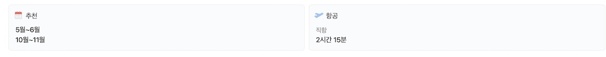
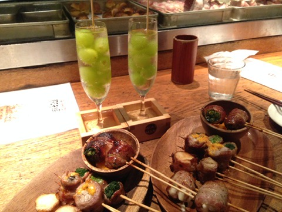
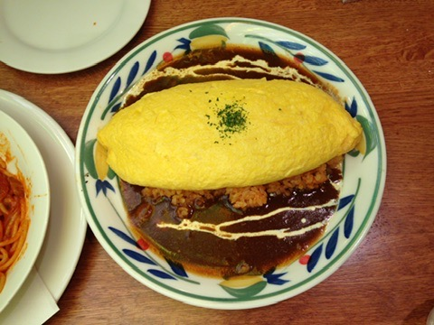
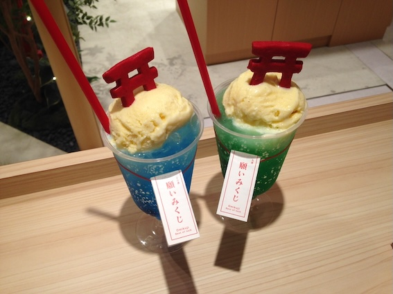
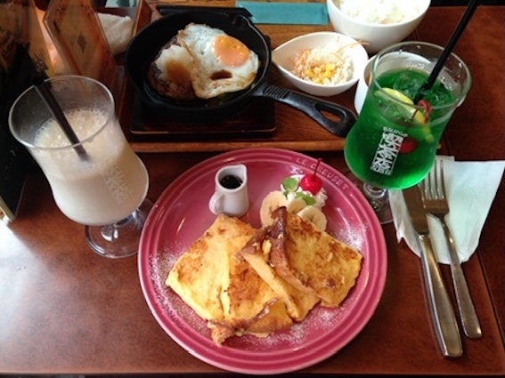
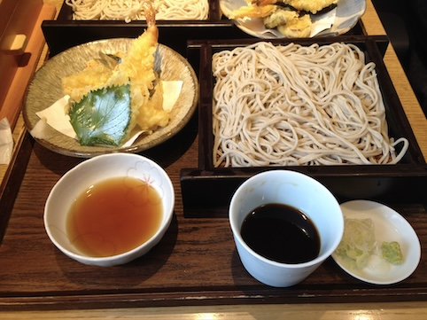
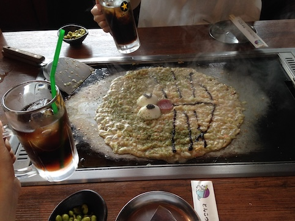

TOKYO?
도쿄는 일본의 수도이자 문화, 경제, 정치의 중심지로, 고대와 현대가 조화를 이루는 도시입니다.
역사적인 고쿄와 센소지 절이 자리 잡고 있으며, 도쿄 타워와 스카이트리에서 도시 전경을 감상할 수 있습니다.
시부야 스크램블 교차로는 세계에서 가장 분주한 교차로 중 하나로 유명합니다.
매년 3월에는 도쿄 마라톤이 열리며, 7월에는 스미다 강에서 일본 최대의 불꽃축제를 경험할 수 있습니다.
여행준비
먹거리
